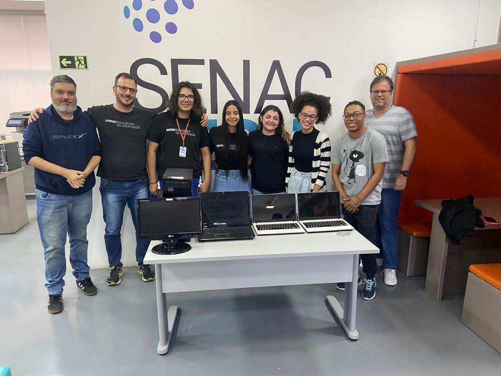

Fundado em 19 de outubro de 1989, o Senac Tech é um centro de tecnologia voltado para o conhecimento. Com um ambiente e um portfólio de cursos moderno, atende mais de mil alunos por ano por meio de cursos EAD e presenciais em diversos níveis, além de ações extensivas. O principal foco da escola é a educação profissional nas áreas da Informática e Gestão. Ganhou diversos prêmios, entre eles o Troféu Bronze no Prêmio Qualidade RS - PQRS em 2008, 2009 e 2012, o Troféu Prata em 2015 e 2017, o Prêmio SUCESU, que destacou a fundação do Senac Informática como um dos seis acontecimentos mais importantes da década, e o reconhecimento pelo Comitê de Comércio e Serviços pela contribuição ao Sistema da Qualidade em 2008 e 2009. Em 2016 comemorou, juntamente com todas as unidades do Estado, a conquista do Prêmio Nacional da Qualidade (PNQ). No ano seguinte, celebrou o Prêmio Ibero-Americano da Qualidade. O Senac-RS foi a primeira instituição de ensino do Brasil a receber as distinções, reconhecimentos máximo à excelência. Em março 2018, foi agraciado com o Melhores em Gestão e eleito Destaque na distinção promovida pela Fundação Nacional da Qualidade (FNQ). A escola conta com docentes qualificados na área da tecnologia, com certificação CCNA da Cisco e Pós-graduação na área da tecnologia e em docência no ensino profissional. O horário de funcionamento é de segunda a sexta-feira, das 8h30 às 20h.
Depoimento dos Alunos - #mudandoavida |
||
Aluno(a) |
Curso |
Depoimento |
Marcelly Marin |
INFORMÁTICAINTENSIVO |
Minha experiência no Senac foi boa! Aprendi muitos processos e o curso me ajudou a estar no emprego atual, conheci professores incríveis e que me ajudaram a crescer mental e profissionalmente. |
A área da informática está em expansão e possui uma presença importante em diversos setores do mercado de trabalho. A profissão de Técnico em Informática é uma das que mais cresce no Brasil e o profissional pode atuar em múltiplas frentes, como no Suporte Técnico, Manutenção de Hardware e Periféricos, Pesquisa e/ou Desenvolvimento Tecnológico, Informática Biomédica, Administração de Redes de Computadores e até Análise de Sistemas. Ciente disso, o Senac Tech está com inscrições abertas para duas turmas do curso Técnico em Informática. Para ambas as aulas iniciam no dia 2 outubro e ocorrerão de segunda a sexta-feira, em dois horários: das 9h15 às 12h15 e das 19h às 22h. Durante as 1.200 horas de aprendizado, a formação prepara o aluno para o planejamento e execução dos processos de manutenção de computadores e operação de redes locais. Além disso, ensina a desenvolver aplicativos computacionais através de normas técnicas de qualidade, saúde, segurança do trabalho e preservação ambiental no desempenho da função. Ao final da capacitação, o estudante estará pronto para ingressar em empresas de variados segmentos e participar de concursos em organizações públicas. Os interessados podem se inscrever no site do Senac Tech ou presencialmente na escola que fica localizada na rua Venâncio Aires, 93 – Cidade Baixa. Mais informações pelo telefone (51) 32887750 ou ainda pelo WhatsApp (51) 99315-9728.
 Conforme pesquisa do Portal de dados Centro Regional de Estudos para o Desenvolvimento da Sociedade da Informação (Cetic.br), 60% dos domicílios do Brasil não possui acesso a um computador, laptop ou tablet. O mesmo Cetic.br em pesquisa realizada na pandemia aponta que 3/4 dos usuários de Internet com 16 anos ou mais e que são das classes DE (74%) acessam a rede exclusivamente pelo telefone celular, percentual que é de 11% entre os usuários das classes AB. Entre os usuários de Internet com 16 anos ou mais, que frequentam escola ou universidade, o celular aparece também como a ferramenta utilizada com maior frequência (37%) para assistir às aulas e atividades educacionais remotas. Para reduzir a exclusão digital e proporcionando acesso a equipamentos eletrônicos, o Senac Tech criou o PIDS Tech (Programa de Inclusão Digital Senac Tech).
Criado em 2014 em parceria com os estudantes do Senac Tech, empresas e pessoas parceiras, o PIDS Tech tende a diminuir essa realidade dos estudantes, funcionários da escola, ONG’S ou Associações comunitárias, realizando a doação de equipamentos tecnológicos devidamente recuperados e com manutenção em dia. “Esse abismo social, cresce a cada dia, prejudicando a base educacional das nossas crianças e adolescentes e refletindo na qualificação social e profissional de todas as pessoas que não têm o mínimo de condições de adquirir um equipamento tecnológico (computador, laptop, celular ou tablet), ou acesso a essas tecnologias”, explica o docente dos cursos da área de TI, Miguel Matiolla.
Conforme conta Matiolla, a ideia do PIDS Tech surgiu nos cursos técnicos em informática, nos quais o primeiro módulo enfocava o desenvolvimento dos conhecimentos técnicos na área de manutenção de computadores. Um dos assuntos abordados com os alunos dizia respeito às questões sustentáveis e à dificuldade enfrentada pelas empresas para descartar adequadamente os equipamentos eletrônicos fora de uso. Ao apresentar esse problema para a turma, um dos alunos, que trabalhava em uma empresa que enfrentava essa situação, compartilhou que havia uma sala cheia de equipamentos parados. “Foi nesse momento que surgiu a ideia de solicitar à empresa a doação desses equipamentos, aproveitando o conhecimento técnico dos alunos para realizar a manutenção e recuperação dos mesmos, com o objetivo de posteriormente doá-los a alguma associação. O resultado dessa ação foi um sucesso e desde então seguimos recuperando equipamentos e entregando-os para quem precisa”, conclui o docente.
O Senac Tech está arrecadando computadores, laptops e periféricos (monitores, teclado, mouse, cabos e peças de computadores) que seriam descartados para serem recuperados e doados para quem necessita. Para mais informações sobre como realizar a entrega acesse o site da escola ou pelo telefone (51) 3288.7750. O Senac Tech fica localizado na rua Av. Venâncio Aires, 93 - Cidade Baixa.